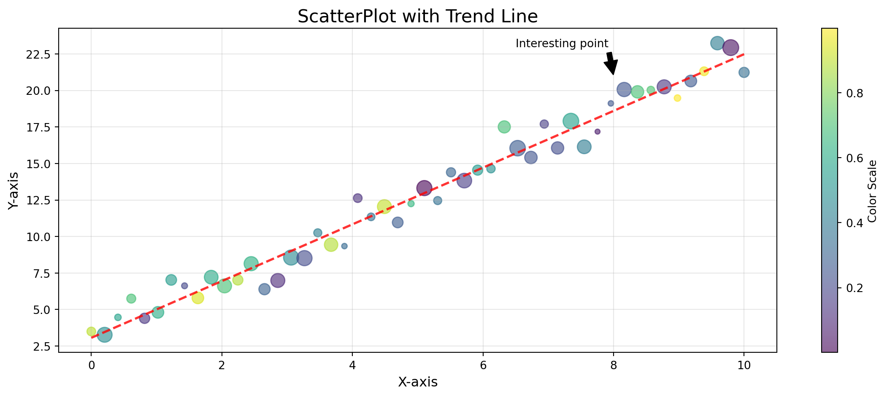

Code
import matplotlib.pyplot as plt
import numpy as np
# Generate data
np.random.seed(42)
x = np.linspace(0, 10, 50)
y = 3 + 2*x + np.random.randn(50)
sizes = np.random.randint(20, 200, 50)
colors = np.random.rand(50)
# Create the plot
plt.figure(figsize=(12, 5))
scatter = plt.scatter(x, y, c=colors, s=sizes, alpha=0.6, cmap='viridis')
# Add trend line
z = np.polyfit(x, y, 1)
p = np.poly1d(z)
plt.plot(x, p(x), "r--", alpha=0.8, linewidth=2)
# Customize the plot
plt.title("ScatterPlot with Trend Line", fontsize=16)
plt.xlabel("X-axis", fontsize=12)
plt.ylabel("Y-axis", fontsize=12)
plt.colorbar(scatter, label="Color Scale")
# Add a text annotation
plt.annotate("Interesting point", xy=(8, 21), xytext=(6.5, 23),
arrowprops=dict(facecolor='black', shrink=0.05))
plt.grid(True, alpha=0.3)
plt.tight_layout()
plt.show()